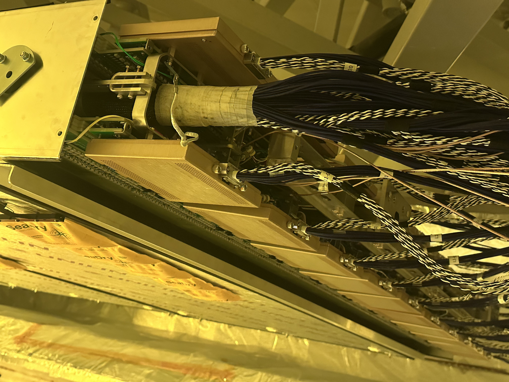
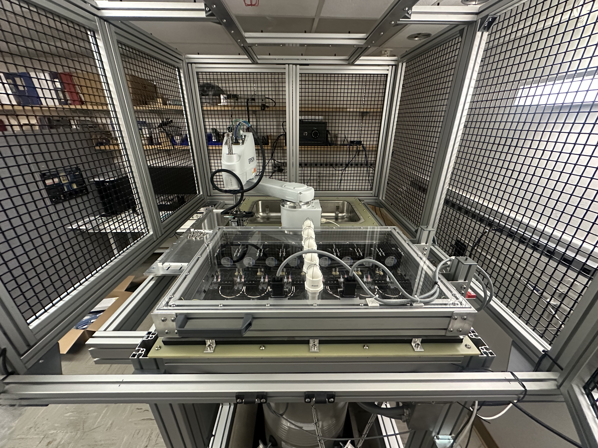
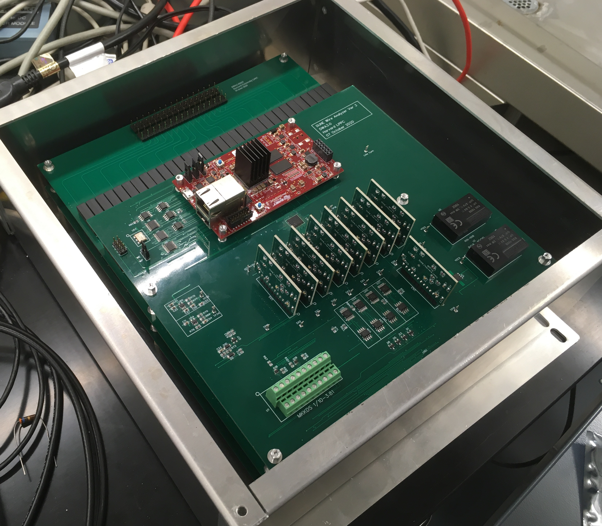
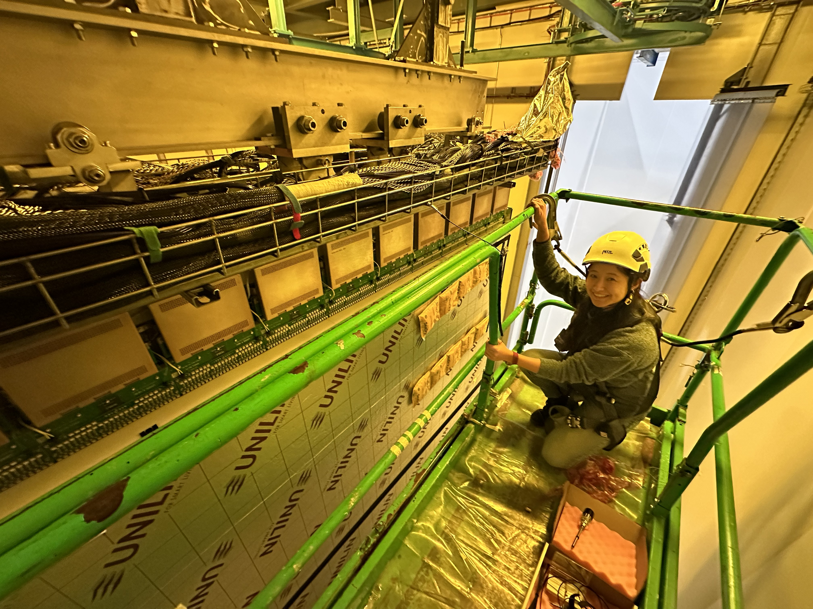

RESEARCH
Before a detector can begin searching for rare signals, we need to know that every part of it works as intended. My research focuses on validating detector performance—from individual electronics components to complete detector systems—and preparing large-scale neutrino detectors for reliable operation.

Preparing a detector for physics. Cold electronics installed on a DUNE Anode Plane Assembly (APA) during detector commissioning at CERN.
WHY COMMISSIONING?
Modern neutrino detectors are among the most complex scientific instruments ever constructed. They contain hundreds of thousands of readout channels operating inside cryogenic environments, where maintenance is nearly impossible once the detector is sealed and filled with liquid argon.
Before a detector can collect physics data, every component—from individual chips and sensing wires to complete detector modules—must be carefully validated to ensure reliable operation. Detector commissioning bridges the gap between construction and scientific discovery, transforming precision engineering into trusted scientific instruments.
My work spans multiple stages of this process, from validating individual detector components to commissioning complete detector systems for operation in cryogenic environments.
OVERVIEW
Developing automated systems for validating cold electronics before installation, ensuring each component performs reliably under cryogenic conditions.
Jump to RTS →Using the Detector Wire Analyzer (DWA) to verify wire integrity and tension before detector assembly.
Jump to DWA →Installing and commissioning cold electronics, validating detector performance, and preparing large-scale detector modules for operation.
Jump to Cold-Box Commissioning →Exploring automation, intelligent monitoring, and scalable commissioning strategies for future neutrino experiments.
Jump to Future Directions →
TESTING EVERY COMPONENT
The first step toward detector readiness begins at the component level. Before electronics are installed into a detector, each chip must be characterized and verified to ensure reliable operation.
To support this effort, I developed and commissioned a cryogenic testing workflow centered on an automated Robotic Test System (RTS), designed for precision testing of Cold ADC chips used on DUNE Front-End Mother Boards (FEMBs).
An industrial robotic arm automatically transfers ADC chips between storage trays and precision test sockets, enabling repeatable electrical characterization while significantly reducing manual handling. By automating this process, the system improves testing efficiency and ensures consistent measurements across large numbers of detector components.
In addition to developing the testing workflow, I designed and assembled the cryogenic infrastructure required to characterize these electronics at temperatures comparable to their operating environment inside a liquid argon detector. I also mentored undergraduate researchers responsible for installing and operating the cryogenic system, allowing cold ADC characterization to become a routine part of detector validation.
LISTENING TO EVERY WIRE
Long before a detector records its first neutrino interaction, every sensing wire must be verified to ensure that it has survived manufacturing, transportation, and installation without damage. Since manually inspecting hundreds of thousands of wires is impossible, dedicated diagnostic systems are essential.
During my PhD at Harvard University, I contributed to the development and analysis of the Detector Wire Analyzer (DWA), a non-contact system that measures the resonance frequencies of detector wires to determine their mechanical tension and verify their integrity before detector installation.
This work combined detector instrumentation, signal processing, and precision analysis to provide a reliable method for detector quality assurance while minimizing the risk of damaging delicate sensing wires.


BRINGING THE DETECTOR TO LIFE
The final stage of detector validation takes place after detector components have been assembled into full detector modules. At CERN, I participate in the installation and commissioning of Front-End Mother Boards (FEMBs) on DUNE detector modules before cryogenic operation.
My work includes installing cold electronics, verifying detector connectivity, commissioning high-voltage systems, evaluating detector noise performance, and validating detector operation during Cold Box tests. These commissioning campaigns ensure that detector modules meet performance requirements before they are prepared for installation in the underground experiment.
Working on detector commissioning has reinforced the importance of standardized validation procedures, careful documentation, and systematic performance monitoring—practices that become increasingly critical as neutrino detectors continue to grow in scale and complexity.
LOOKING AHEAD
Future neutrino detectors will become even larger, more sophisticated, and more autonomous than today's experiments. As detector complexity continues to grow, successful commissioning will increasingly depend on automation, intelligent diagnostics, and reproducible validation procedures.
My research aims to develop tools that make detector commissioning more efficient, scalable, and reliable—from automated hardware testing to advanced monitoring systems capable of identifying potential issues before they impact detector performance.
Ultimately, the goal is simple: ensure that every detector is ready to make the discoveries it was built for.
RESEARCH PHILOSOPHY
Scientific discoveries begin long before the first physics event is recorded. They begin with careful engineering, rigorous validation, and confidence that every component performs exactly as intended. Whether developing automated testing systems, validating detector wires, or commissioning complete detector modules, my work is driven by the belief that reliable instrumentation is the foundation of reliable science.
EXPLORE MORE
Building next-generation detector technologies for future neutrino experiments.
Explore →Using neutrinos to explore the universe, from the Sun to exploding stars.
Explore →Sharing the excitement of particle physics through education, outreach, and public engagement.
Explore →